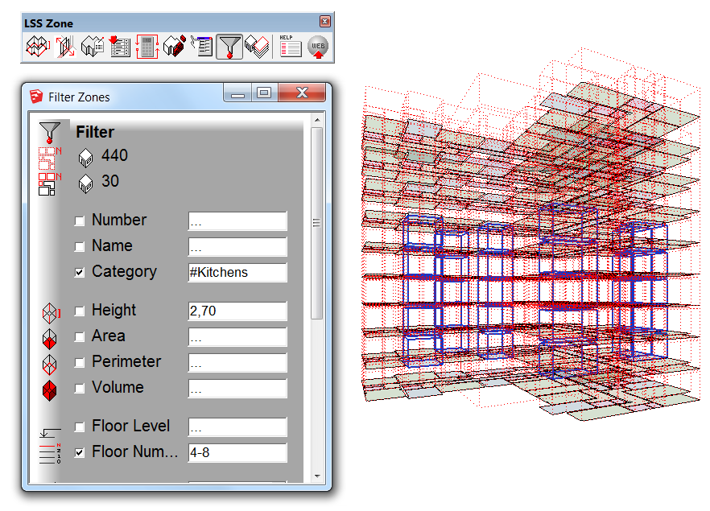

You may use this dialog to select particular zones from a large set of zones
automatically instead of picking them one-by-one.
- select set of zones, which contain particular zone(s) you need
- open 'Filter Zones' dialog
- specify filter condition(s), hit Enter to confirm condition change
- adjust filter conditions if needed (use checkboxes to enable/disable particular filter conditions)
- close the dialog if you are happy with selection results
Bounding boxes of zones, which were initially selected prior dialog opening, are highlighted by red dotted lines.
Selection changes immediately after filtering conditions changes.
It is possible to set range of values instead of fixed value for quantitative filtering conditions.
Use "-" sign to separate bounding values of quantitative condition.
Note, that only decimal values are welcome.
Quantitative conditions:
- height
- area
- perimeter
- volume
- floor level
- floor number
It is possible to select another set of zones right while the dialog is still active. It is necessary to ensure, that an initial
selection is highlighted by thin red dotted lines.